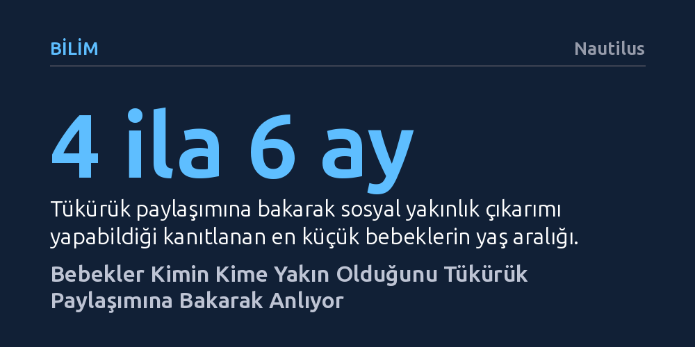

BILIM · Nautilus · 2026-10-09
Dört ila altı aylık bebekler, yetişkinlerin kiminle tükürük paylaştığını izleyerek aralarındaki sosyal yakınlığı ve kimin kime yardım edeceğini anlayabiliyor. Bu bulgu, insanların yakın ilişkileri ayırt etme becerisinin sonradan öğrenilen bir alışkanlıktan ziyade doğuştan gelen evrimsel bir sezgi olduğunu gösteriyor.
Bebeklerin henüz konuşmayı veya dünyayı kavramayı öğrenmeden önce bile, vücut sıvısı paylaşımı gibi ince biyolojik ipuçları üzerinden karmaşık sosyal ilişkileri ve sadakat ağlarını çözebildiğini kanıtlıyor.

İnsan yavrusu dünyaya geldiğinde tamamen savunmasızdır; kendi başını bile dik tutamaz. Beslenme, korunma ve bakım gibi en temel hayati ihtiyaçlarını karşılamak için bütünüyle çevresindeki yetişkinlere bağımlıdır. Bu aşırı bağımlılık hali, bebeğin etrafındaki insanlardan hangisine güvenebileceğini, zor durumda kaldığında ilk kimin yardımına koşacağını erkenden anlamasını bir hayatta kalma meselesine dönüştürür.
Harvard ve MIT araştırmacılarının liderliğindeki yeni bir çalışma, bebeklerin bu hayati sosyal haritayı şaşırtıcı bir göstergeye bakarak çıkardığını ortaya koydu: Kimin kiminle tükürük paylaştığı. Bebekler henüz konuşamazken ve dünyayı yeni yeni tanırken, aralarında vücut sıvısı transferi olan bireylerin birbirine daha yakın olduğunu ve birbirini kayıracağını sezebiliyor.
Araştırma ekibi bu mekanizmayı test etmek için bebeklere kuklalarla sahnelenen iki farklı tiyatro oyunu izletti. İlk oyunda bir yetişkin, portakal dilimini önce kendi ağzına götürdü, ardından kuklanın ağzına vererek açık bir tükürük paylaşımı sergiledi. Bir başka yetişkin ise kuklaya tükürük teması olmadan sadece bir top uzatarak sıradan bir paylaşımda bulundu. Ardından kukla sıkıntı belirten sesler çıkardığında araştırmacılar bebeklerin bakışlarını takip etti. Bebekler, zor durumdaki kuklanın yardımına top uzatanın değil, portakalı paylaşanın koşmasını bekledi ve gözlerini doğrudan tükürük paylaşan yetişkine çevirdi.
İkinci oyunda ise yiyecek tamamen devre dışı bırakıldı. Bu kez bir yetişkin parmağını önce kendi ağzına sokup ardından bir kuklanın ağzına götürdü; diğer kuklaya ise yalnızca alnına dokunarak temas etti. Yetişkin ağlama taklidi yaptığında, bebekler yine ağız teması kurulan kuklaya baktılar. Deneyin yürütücüsü Woo bu durumu şöyle özetliyor: “İlk deney yiyecek paylaşımı gibi çok tanıdık bir eyleme odaklanırken, birinin parmağını başkasının ağzına sokması çocukların günlük hayatında pek karşılaşmadığı bir davranıştı.” Buna rağmen bebeklerin her iki senaryoda da tükürük paylaşımını daha yakın bir bağ olarak kodlaması dikkat çekiciydi.
Bilim insanları daha önceki çalışmalarda 8 ila 10 aylık bebeklerin tükürük paylaşımından sosyal yakınlık çıkarabildiğini zaten biliyordu. Ancak bu yaş grubundaki bebeklerin yüzde 90'ı katı gıda tüketmeye başlamış olduğundan, aile içinde kaşık veya yiyecek paylaşımına defalarca tanık olup bu davranışı sonradan öğrenmiş olma ihtimalleri yüksekti.
Yeni araştırmanın asıl çarpıcı tarafı, bu testin 4 ila 6 aylık çok daha küçük bebeklerde tekrarlanmış olmasıdır. Bu yaş grubundaki bebeklerin henüz sadece yaklaşık yarısı katı gıdayla tanışmıştır ve çoğu bu tür samimi yemek paylaşımlarını gözlemleyecek kadar sosyal tecrübeye sahip değildir. Buna rağmen 4-6 aylık bebeklerin de aynı ayrımı yapabilmesi, insan beyninin yakın ilişkileri tespit etmeye yönelik biyolojik bir hazırlıkla doğmuş olabileceğini düşündürüyor.
Bu davranış biçimi aslında diğer primatlarda da sıkça gözlemlenen köklü bir evrimsel mekanizmaya dayanıyor. Örneğin vervet maymunları üzerine yapılan araştırmalarda, bir yavru tehlike veya acı çığlığı attığında, gruptaki diğer genç maymunların yardım için etrafa rastgele değil, doğrudan o yavrunun annesine baktığı bilinmektedir. Primatlar, kimin kimden sorumlu olduğunu sosyal ipuçlarından anlar.
İnsan bebekleri de benzer şekilde, tükürük gibi biyolojik sıvıların aktarıldığı eylemlerin yalnızca çok yakın, birbirine güvenen ve birbirini korumakla yükümlü bireyler arasında gerçekleştiğini çok erken bir aşamada fark eder. Bir başkasıyla tükürük paylaşmak, sıradan bir nesne paylaşımının çok ötesinde biyolojik bir yakınlık göstergesidir ve bebekler bu göstergeyi hayatta kalmanın ilk rehberi olarak kullanır.